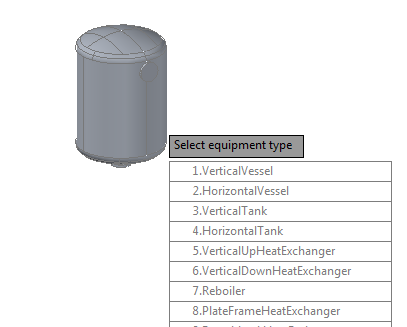

The sample illustrates how to use high-level APIs to create equipment.
The high-level APIs are implemented by the managed classes CategoryInfo, EquipmentHelper, EquipmentPrimitives, EquipmentType, NozzleInfo, and NozzleType in Autodesk.ProcessPower.PnP3dEquipment.
NETLOAD Equipment EquipmentLoadPackage 1.VerticalVessel EquipmentCreate 0,0,0 0

In the sample, the EquipmentLoadPackage command runs the following code:
using (EquipmentHelper eqHelper = new EquipmentHelper())
...
//get a list of equpiment types (for example: VerticalVessel, Reboiler)
foreach (EquipmentType eqt in eqHelper.EquipmentPackages)
{
cnt += 1;
kwds.Add(cnt.ToString() + "." + eqt.DisplayName.Replace(" ", ""));
}
//specify the equipment type on the command line
PromptResult res = ed.GetKeywords("\nSelect equipment type", kwds.ToArray());
if (res.Status == PromptStatus.OK)
{
int j = kwds.IndexOf(res.StringResult);
EquipmentType eqt = eqHelper.EquipmentPackages[j];
// Scale and init for the project, and make current
s_CurrentEquipmentType = eqHelper.MakeEquipmentForProject(eqt);
s_CurrentDwgName = null;
s_CurrentEquipmentId = ObjectId.Null;
}See readme.txt in the project sample for details.